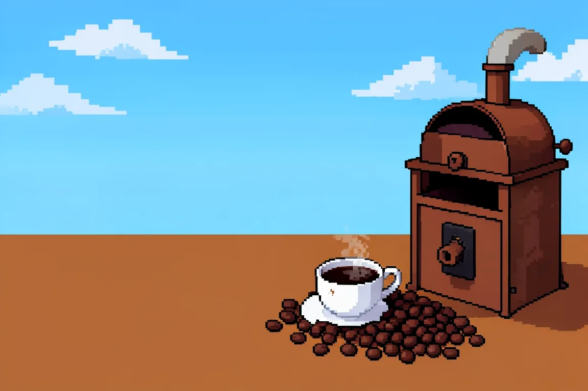

internet · 2010–now · also: Pixel UI, 8-bit web, Retro game UI
Blocky sprites, a limited palette, hard pixel edges, bitmap type and game-style panels. It borrows from 8-bit and 16-bit games and makes a page feel like a game screen.

Core thesis
Limits are the style: few pixels, few colours and a hard grid make a clear, playful picture.
Design principles
Draw art on a base grid of 8px or 16px sprites and scale only by whole numbers (2x, 3x, 4x).
Limit the palette to 8 to 16 colours; use 1 outline colour and no more than 3 tones per material.
Render images with `image-rendering: pixelated` and never use anti-aliased scaling.
Build panels with a 4px stepped border (corner pixels cut) and a 4px hard shadow offset (4px, 4px) with no blur.
Set text in a bitmap face at multiples of 8px (8, 16, 24, 32px) with a line height of 1.5.
Animate in steps: use `steps(4)` for sprites at 8 to 12 frames per second and blink cursors at 1s.
Show a game element on each screen: a health bar, a counter, a menu with a pointer or a dialogue box.